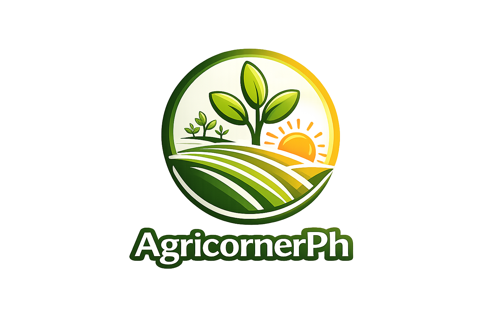

Your Daily Dose of Agriculture Knowledge
Welcome to AgricornerPh, your go-to page for agriculture knowledge, board exam review, and daily practice questions.
Access agriculture board exam reviewers and learning resources to help you prepare effectively.
Test your knowledge with daily agriculture board exam questions and review exercises.
Stay updated with agriculture news, current events, and quick trivia to boost your knowledge.
AgricornerPh is built to support students, reviewees, and agriculture learners by providing accessible and practical educational content online.